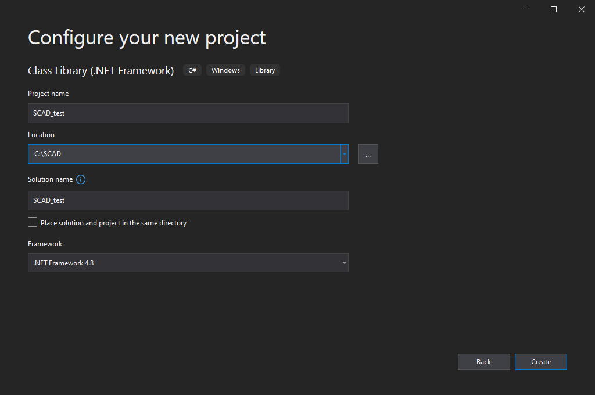
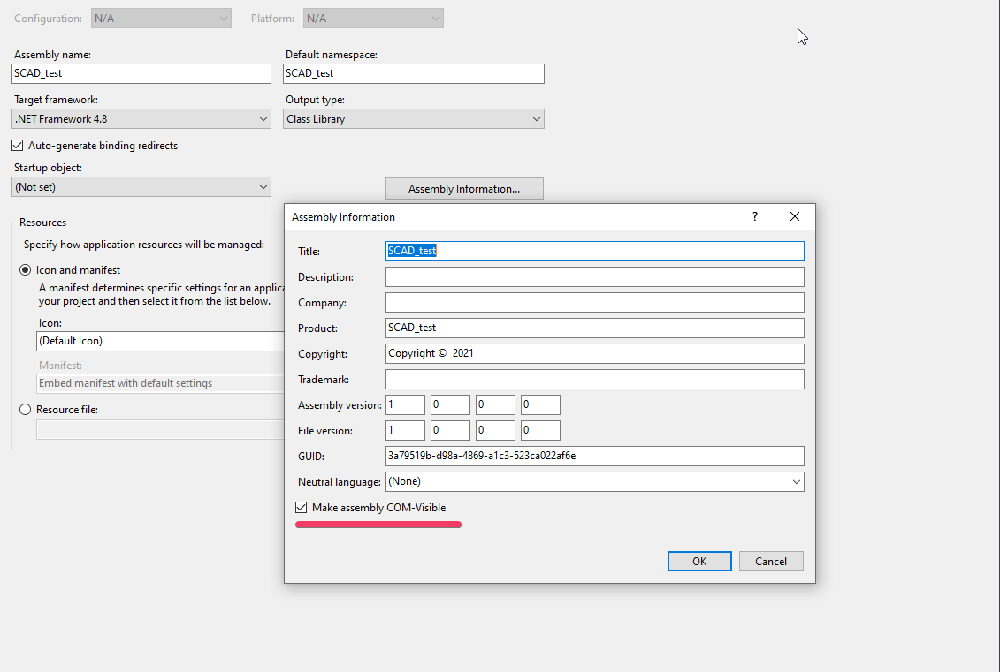
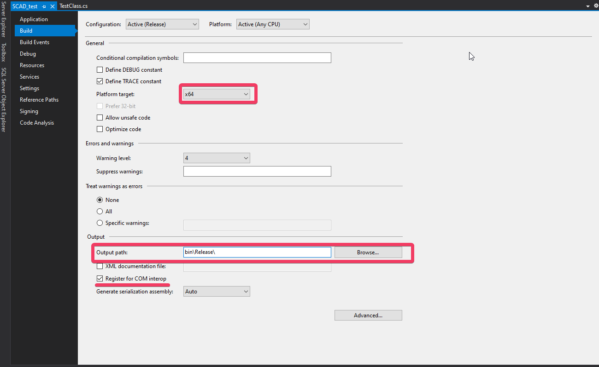
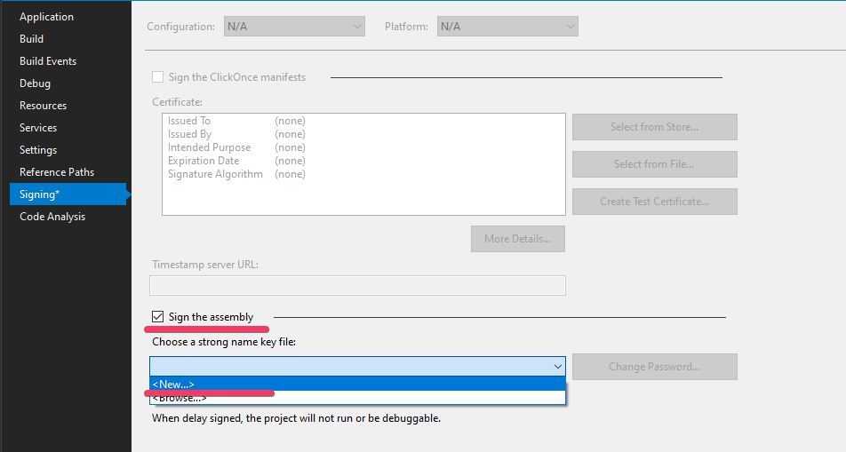
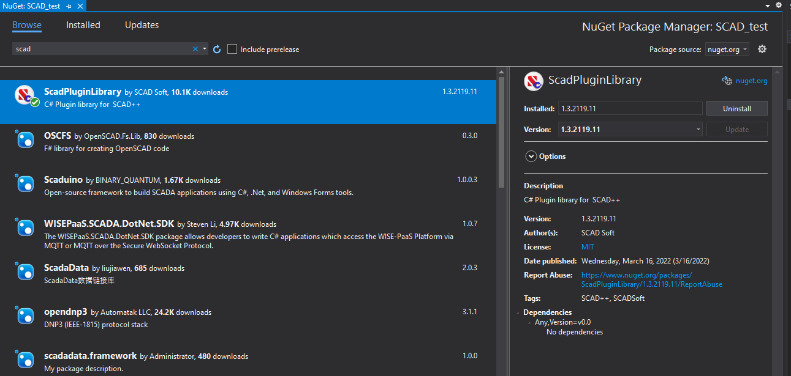
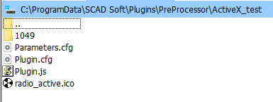
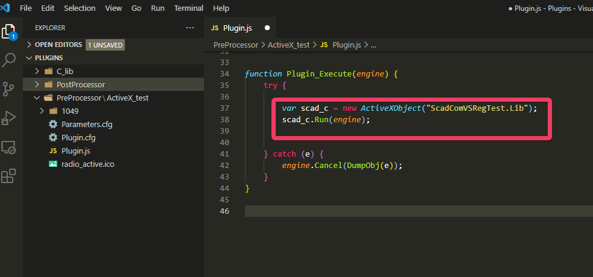
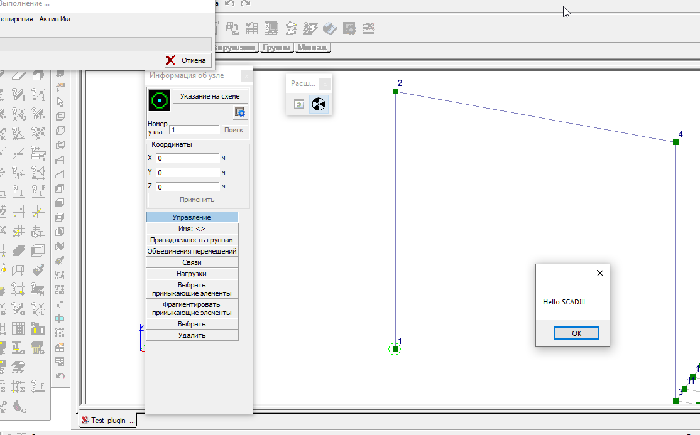
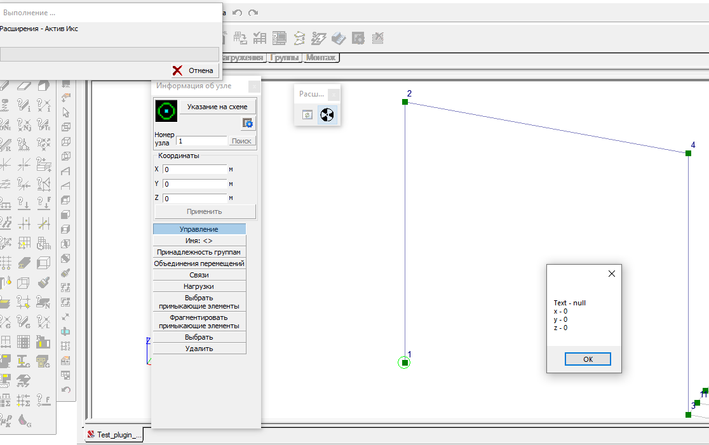

Создание плагина
В статье приведен пример создания пользовательского плагина и использования .NET библиотеки ScadPluginLibrary доступную через NuGet Packages
Информация по пользовательским расширениям на основе JScript в SCAD++
Прежде всего стоит ознакомиться с документацией "Пользовательских расширений", а именно с файлом SCAD_Plugins.pdf, он находится в C:\SCAD Soft\SCAD Office (стандартная директория)
Директория плагинов
Стандартное расположение папок в C:\ProgramData\SCAD Soft\Plugins (%ALLUSERSPROFILE%\SCAD Soft\Plugins). Тут хранятся 2 основные директории для плагинов:
- PreProcessor(Препроцессоры)
- PostProcessor(Постпроцессоры)
PreProcessor (Препроцессоры)
Стандартное расположение C:\ProgramData\SCAD Soft\Plugins\PreProcessor (%ALLUSERSPROFILE%\SCAD Soft\Plugins\PreProcessor) - корневая папка, содержащая все пользовательские расширения для режима задания исходных данных. Все плагины которые хранятся в этой директории видны только из окна Расчетная схема. Основные возможности:
- Создание геометрии
- Задания загружения
- Задание жесткостей
- Задание РСУ
- Задание комбинации загружений
- Задание групп армирования
- Задание групп металлических конструкций
- Получение информации о схеме и ее свойствах
PostProcessor (Постпроцессоры)
Стандартное расположение C:\ProgramData\SCAD Soft\Plugins\PreProcessor (%ALLUSERSPROFILE%\SCAD Soft\Plugins\PreProcessor) - корневая папка, содержащая все пользовательские расширения для режима анализа результатов. Все плагины которые хранятся в этой директории видны только из окна Графический анализ. Основные возможности:
- Обработка результатов расчета
Начало работы
Для работы с библиотекой и плагинами рекомендуется использовать Visual Studio (VS), так же необходим .NET Framework 4.8.
Если регистрация сборки будет производится из самой Visual Studio обязательно нужно запустить VS с правами администратора
Для начала создадим новый проект библиотеки классов (Class Library) на основе .NET Framework

Настройка проекта
1) Properties->Application->Assembly information тут включаем флажок Make assembly COM Visible

2) Properties ->Build
- В Platform target необходимо выбрать разрядность системы/программы (в данном случае разрядность системы Windows x64)
- В Output path стоит сразу выбрать где будет находится сборка (лучше использовать отдельную директорию для таких .dll или сразу использовать директорию пользовательских расширений SCAD++)
- При включении флажка Register for COM interop VS сама будет регистрировать выходную сборку по пути выбранном в Output path

Для регистрации не через VS пункт 2 выполнять не нужно
3) Properties->Signing Для регистрации сборки в .NET Framework необходимо подписывать сборку

4) Загружаем через NuGet Packages: ScadPluginLibrary

Создание плагина
Создаем класс, который будет являться точкой входа, TestClass он наследует интерфейс ITest. Для каждого из них добавляем атрибуты как показано ниже
namespace SCAD_test
{
[ProgId("ScadComVSRegTest.Lib")]
[Guid("64F91810-4018-45CB-931A-24042FBE4EF4")] //Сгенерировать свой
[ClassInterface(ClassInterfaceType.None)]
[ComVisible(true)]
public class TestClass : ITest
{
public void Run(dynamic engine)
{
throw new NotImplementedException();
}
}
[Guid("F8ECD819-2DC5-4940-B1AE-85A5C2DA998B")]//Сгенерировать свой
[InterfaceType(ComInterfaceType.InterfaceIsIDispatch)]
[ComVisible(true)]
public interface ITest
{
[DispId(1)]
void Run(dynamic engine);
}
}
[ProgId("ScadComVSRegTest.Lib")]это имя через которое будет вызываться наш плагин из JScript (см. ниже)
Добавим логику плагина в метод Run (плагин получает информацию о узле под номером 1 и выводит ее на экран, помимо этого выводится сообщение “Hello SCAD!!!”):
public void Run(dynamic engine)
{
try
{
Engine engineSCAD = new Engine(engine);
Model model = engineSCAD.GetModel();
NodeModel elemModel = model.GetNode(1);
ScadDebug.MessageShow("Hello SCAD!!!");
ScadDebug.PrintScadObjectAll(elemModel);
}
finally
{
//Очистка объекта
Marshal.ReleaseComObject(engine);
}
}
Собираем проект
Вызов черз SCAD++
В папке пользовательских плагинов PreProcessor создадим новую директорию JScript плагина с нужными файлами (можно использовать директории и файлы примеров)

В файле Plugin.js будет вызываться .NET сборка, следующим образом

var scad_c = new ActiveXObject("ScadComVSRegTest.Lib");
Вызывает сборку по имени ScadComVSRegTest.Lib (как указано в атрибуте [ProgId("AnyName")])
scad_c.Run(engine);
у сборки вызывается метод Run куда передаем основной объект SCADa engine, после чего происходит выполнение в SCAD++

